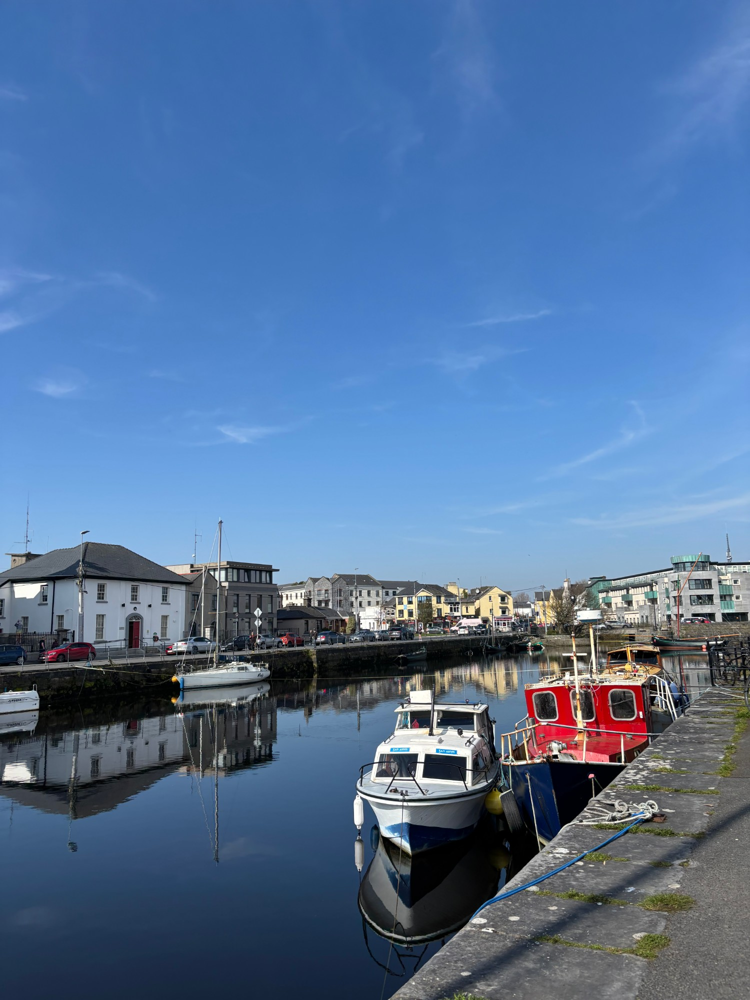
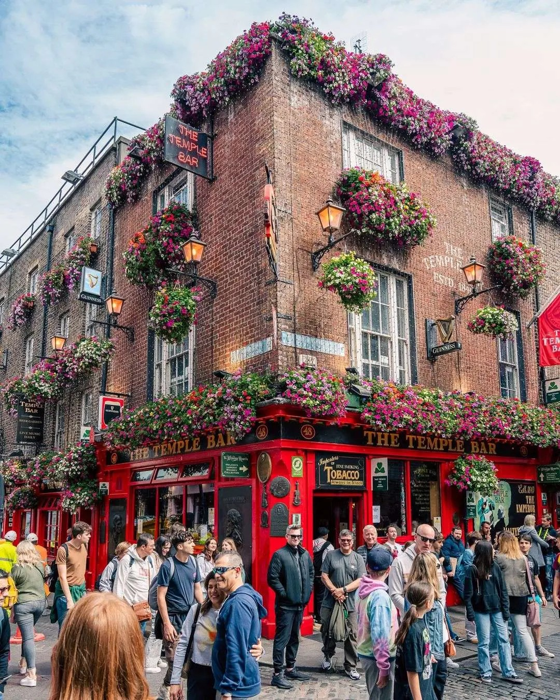
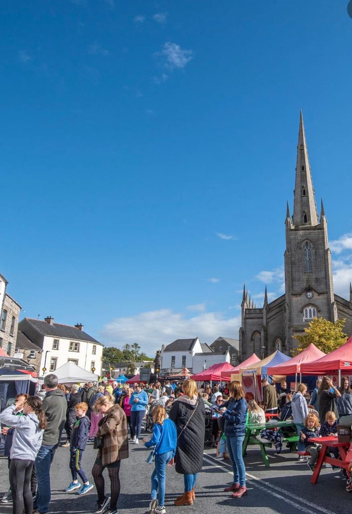
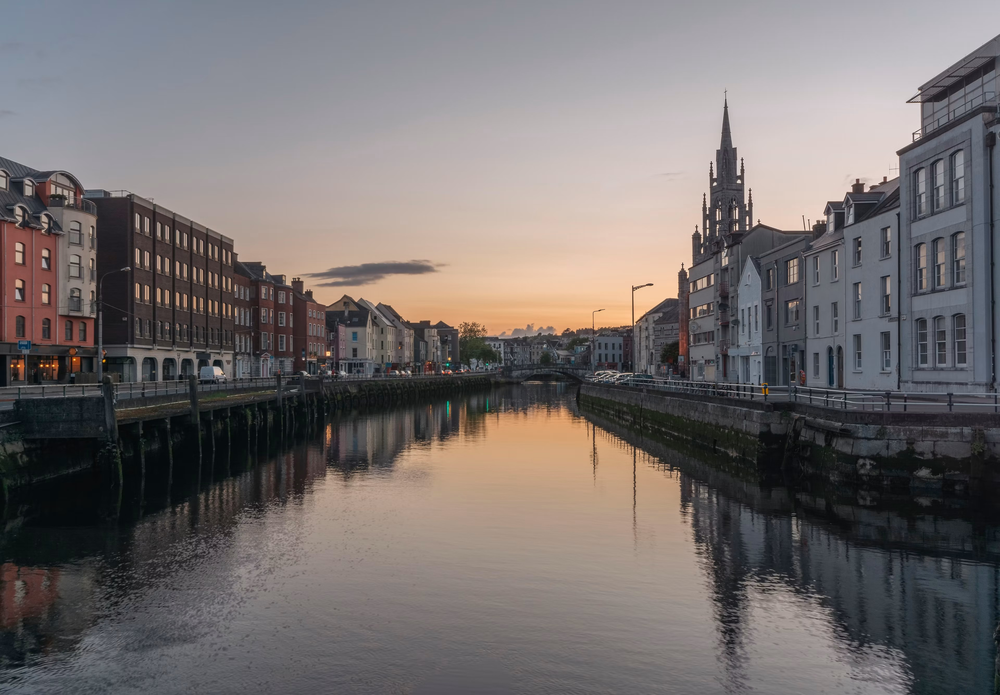
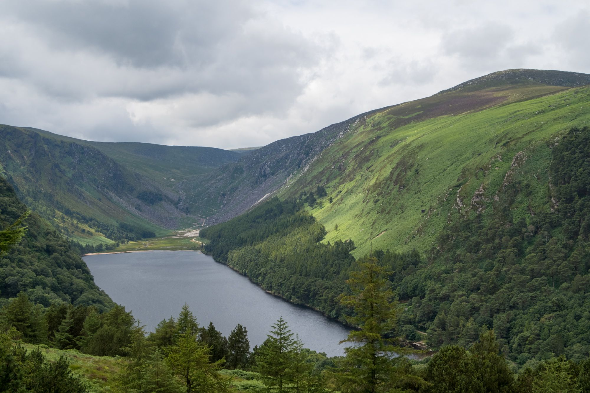
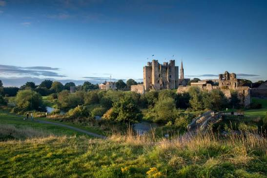

01 · Galway
A lively city with rural magic on the doorstep.
Build days around the city, the coast and local communities.
See a Galway sample programme ↗Different places, different days
Open a destination to see the visits, museums and shared activities that can shape a stay. Every list is a starting point, then we tailor the rhythm to your group.
Plan a destination ↗
01 · Galway
Build days around the city, the coast and local communities.
See a Galway sample programme ↗
02 · Dublin
Mix cultural landmarks with approachable neighbourhoods and the coast.
See a Dublin sample programme ↗
03 · Monaghan
A comfortable base for groups who want local connection and shared activities.
See a Monaghan sample programme ↗
04 · Cork
Give students a base for discovery, reflection and purposeful English practice.
See a Cork sample programme ↗
05 · Wicklow
A natural fit for groups who want to spend more time outside.
Create a Wicklow itinerary ↗
06 · Meath
Make room for heritage, storytelling and activities that connect the past to the present.
Create a Meath itinerary ↗A curated Educate example